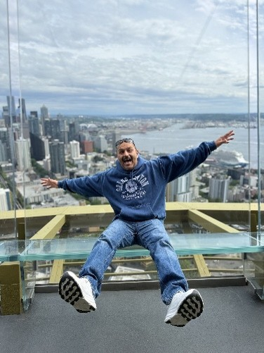
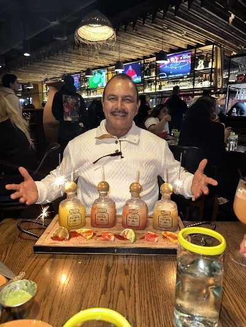
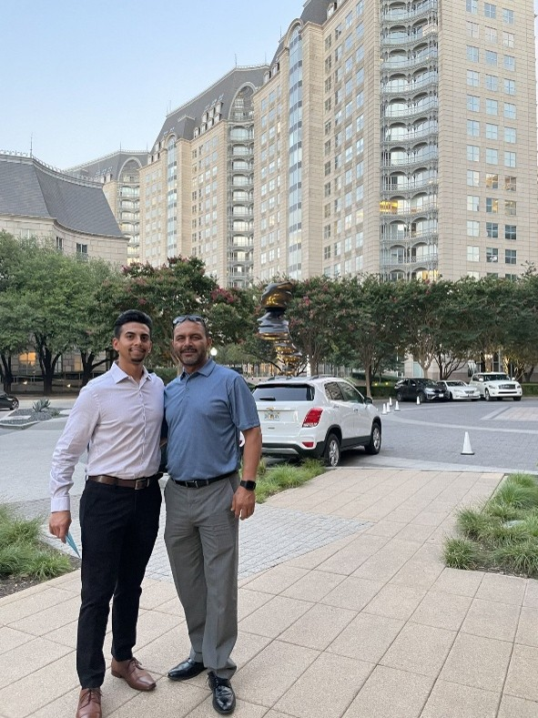

Meet Juan Emigdio Cardenas
Behind every life is a story of experiences, decisions, and personal accomplishments. Juan's journey reflects his dedication to family, hard work, and creating opportunities for those closest to him.

Getting to Know Juan

Juan Emigdio Cardenas was born on January 23, 1975, in Michoacan, Mexico. He is the youngest in his family and is now a proud father of four daughters and one son.
He describes himself as proactive, organized, and outgoing. These qualities can be seen throughout his life, from the importance he places on family to his willingness to take on new challenges.
His Journey
Early Life and Moving to California
Originally from Michoacan, Mexico, Juan moved to California with his parents and siblings in search of a brighter future. California became his home for much of his life and played an important role in his upbringing.
A New Beginning in Texas
In 2007, Juan made the difficult but important decision to move to Texas. He hoped to find better opportunities and build a brighter future for his family.
The move represented another chapter in his life and reflected his willingness to make changes for the people he loves.
Family and Personal Values
Family continues to be one of the most important parts of Juan's life. As a father of five, he takes pride in seeing his children grow into independent and successful adults.
Through his experiences, Juan has developed a strong belief in the value of hard work, responsibility, and perseverance. These are lessons he hopes to pass along to his children.
Words to Live By
"Nothing is given and hard work pays off at the end, with the satisfaction of seeing the accomplishment."
— Juan Emigdio Cardenas

Continuing His Story
Juan continues to stay active, spend time with family and friends, and pursue personal goals. His interests in running and soccer are important parts of his everyday life.
Visit the Hobbies Page to learn more about the activities he enjoys and the challenges he is working toward.
Explore His Hobbies